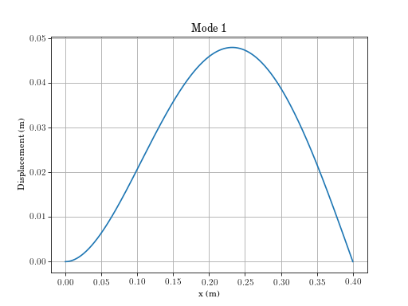
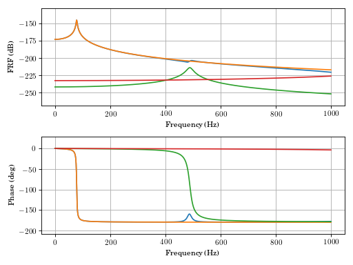

Continuous Systems (continuous_systems)¶
-
continuous_systems.euler_beam_modes(n=10, bctype=3, npoints=2001, beamparams=array([ 7.31000000e+10, 8.43750000e-09, 2.74700000e+03, 4.50000000e-04, 4.00000000e-01]))[source]¶ Mode shapes and natural frequencies of Euler-Bernoulli beam.
Parameters: n: int, numpy array
highest mode number or array of mode numbers to return
bctype: int
bctype = 1 free-free bctype = 2 clamped-free bctype = 3 clamped-pinned bctype = 4 clamped-sliding bctype = 5 clamped-clamped bctype = 6 pinned-pinned
beamparams: numpy array
E, I, rho, A, L, Young’s modulus, second moment of area, density, cross section area, length of beam
npoints: int
number of points for returned mode shape array
Returns: omega_n: numpy array
array of natural frequencies
x: numpy array
x coordinate
U: numpy array
mass normalized mode shape
Examples
(Source code, png, hires.png, pdf)

{kind=link}
{kind=link}
-
continuous_systems.euler_beam_frf(xin=0.22, xout=0.32, fmin=0.0, fmax=1000.0, zeta=0.02, bctype=2, npoints=2001, beamparams=array([ 7.31000000e+10, 8.43750000e-09, 2.74700000e+03, 4.50000000e-04, 4.00000000e-01]))[source]¶ Frequency response function fo Euler-Bernoulli beam.
See working notebook for working code
Parameters: xin: float
location of applied force
xout: float
location of displacement sensor
fmin: float
lowest frequency of interest
fmax: float
highest frequency of interest
zeta: float
damping ratio
bctype: int
bctype = 1 free-free bctype = 2 clamped-free bctype = 3 clamped-pinned bctype = 4 clamped-sliding bctype = 5 clamped-clamped bctype = 6 pinned-pinned
beamparams: numpy array
E, I, rho, A, L, Young’s modulus, second moment of area, density, cross section area, length of beam
npoints: int
number of points for returned mode shape array
Returns: fout: numpy array
array of driving frequencies (Hz)
H: numpy array
Frequency Response Function
Examples
(Source code, png, hires.png, pdf)

{kind=link}
{kind=link}